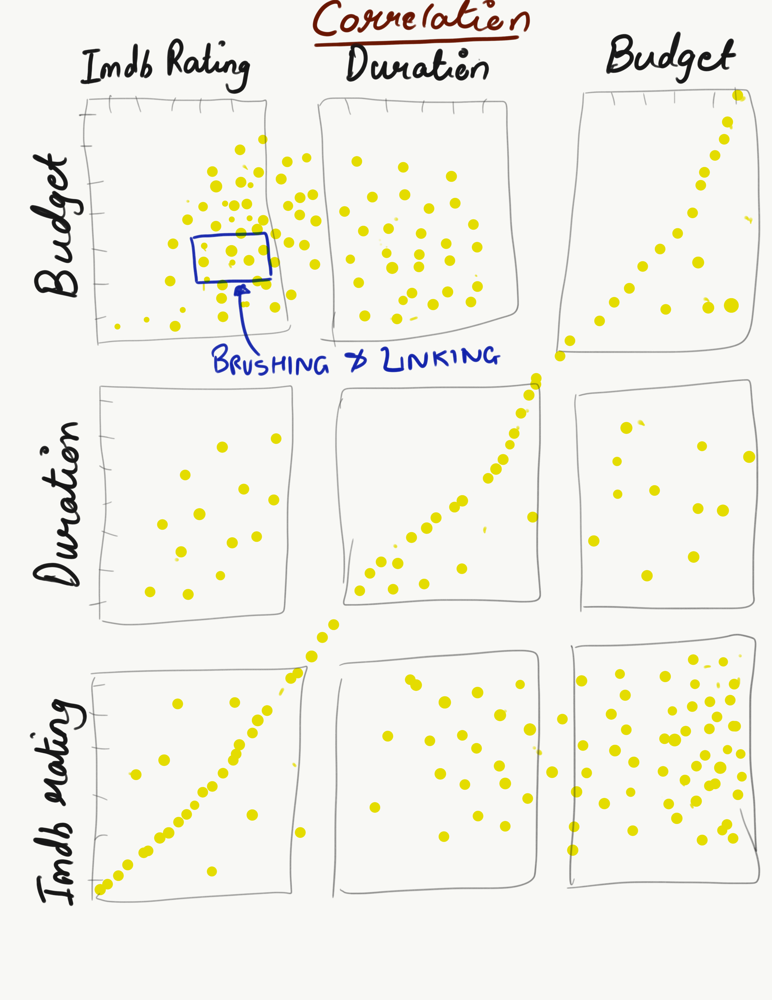

Dataset chosen for the visualization was found by hunting for publicly available datasets related to Movies. I found movie dataset particularly interesting as there are hundreds of movies released everyday worldwide. The quality of the movies is a very important factor as movies act as a contributing factor to the emotional well-being of a person. People start to relate themselves to the movies. Taking into consideration the social and psychological impact of the movies, it is very essential to determine the quality of the movies.
Also when it comes to determining the quality of the movie we majorly rely on critics reviews and human instict which might not always be right. I was curious about how factors other than the critic reviews and human instict contribute to the determining the quality of the movie. Secondary research included analyzing the existing movie vizualization and identifying the areas that can be improved or targeted. Below are some of the drawbacks of the existing visualization that were identified during analysis:
1. Visualizations were very crowded with lots of options provided to the users
2. They mostly target the user and the critics reviews for rating a movie
3. The color schemes and the UI did not look appealing to the users.
4. User had to go through significant number of clicks to complete a specific task
With the above research at hand, I initially started with identifying the hypothesis that I need to prove with my visualization. I analysed the data at hand and tried to frame questions that can be answered by designing the visualization.
The process of hypothesis derivation targeted different areas mainly social media likes, financial aspect, duration, cast and reviews. I brainstormed questions within each areas and could come up with a few as part of my hypothesis. Below are the questions derived during hypothesis. The process of hypothesis generation was oscillating between the data and hypothesis generated.
Hypothesis:
What is the effect of budget on the gross income and eventually on IMDB ratings?
Relation between the duration, budget and rating of the movies
Relation between the social likeability of the cast with success of the movies thereby determining a good movie
After the hypothesis generation, I started with sketching out ideas that could be implemented to cater to the hypothesis. The brainstorming of concepts and sketching for the same involved thorough consideration the the type of charts to be used, visualizations suitable for a particular type of data, color combination, intuitiveness of user interface. The major challenge faced during designing visualization for the movie dataset was the diverse nature of the data. The dataset consisted of almost 5044 movies with mostly different directors and actors which posed a difficulty in grouping the data based on certain parameters.
Sketches
